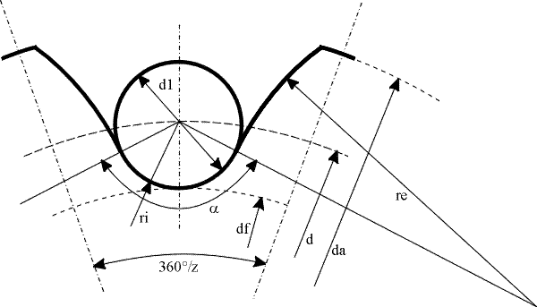
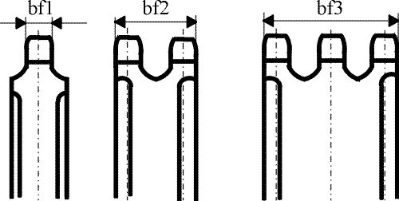

|
|
|


链轮几何
在 KISSsoft 中，您可以按 DIN ISO 606 的定义以图形方式显示和打印链轮几何。图形按平均公差创建。

图 53.3：链轮几何
您还可以在报告中输出链轮的其他值。本节中的图显示特定信息在此报告中的表示方式。

图 53.4：链轮宽度
English Original
Sprocket geometry
In KISSsoft, you can display and print out the sprocket geometry as a graphic as defined in DIN ISO 606. The graphics are created with the mean allowances.
Figure 53.3: Geometry of chain sprocket
You can also output other values for a sprocket in a report. The figures in this section show how specific information is represented in this report.
Figure 53.4: Chain sprocket widths